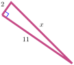
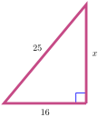

In Section 5.1 we used exponents to calculate the area of a square and the volume of a cube.
Volume and Surface Area.
Volume is the amount of space contained within a three-dimensional object. It is measured in cubic units, such as cubic feet or cubic centimeters.
Surface area is the sum of the areas of all the faces or surfaces that contain a solid. It is measured in square units.
We saw that the area of a square whose side has length \(s\) units is given by \(~A=s^2\) square units, and the volume of a cube of side \(s\) units is gven by \(~V=s^3\) cubic units. Many other useful formulas involve exponents.
The figure below shows several solid objects, along with formulas for their volumes and surface areas.
Example5.38.
At the Red Deer Pub and Microbrewery there is a spherical copper tank in which beer is brewed. If the tank is 4 feet in diameter, how much beer does it hold?
Solution.
The formula for the volume of a sphere is \(~V=\dfrac{4}{3} \pi r^3\text{,}\) where \(r\) is the radius of the sphere. The tank has diameter 4 feet, so its radius is 2 feet. We substitute \(~r=\alert{2}\) into the formula, and simplify, following the order of operations. (If your calculator does not have a key for \(\pi\text{,}\) you can use the approximation \(~\pi \approx 3.14\text{.}\))
\begin{align*}
V \amp =\dfrac{4}{3} \pi (\alert{2})^3 \amp \amp \blert{\text{Compute the power first.}}\\
\amp = \dfrac{4 \pi (8)}{3} \amp \amp \blert{\text{Multiply by}~4\pi,~\text{divide by 3.}}\\
\amp=33.51 \ldots
\end{align*}
The tank holds approximately 33.5 cubic feet of beer, or about 251 gallons.
QuickCheck5.39.
What are the units of volume?
Answer.
Cubic units
QuickCheck5.40.
What are the units of surface area?
Answer.
Square units
Look Closer.
What does it mean for the volume of a round tank to be measured in "cubic" units? If we pour all the beer in the tank into a rectangular box, that box will hold 33 and a half cubes that measure 1 foot on each side.
SubsectionSolving Equations with \(x^2\)
Taking a square root is the opposite of squaring a number. Thus, we can undo the squaring operation by taking square roots. For example, to solve the equation
\begin{equation*}
x^2=64
\end{equation*}
we take the square root of each side. Saying that \(x^2\) equals 64 is the same as saying that \(x\) is a square root of 64. Remember that every positive number has two square roots, so we write
The equation has two solutions, \(8\) and \(-8\text{.}\)
Example5.41.
The volume of a can of soup is 582 cubic centimeters, and its height is 10.5 centimeters. What is its radius?
Solution.
The volume of a cylinder is given by the formula \(~V=\pi r^2h\text{.}\) We substitute \(\alert{582}\) for \(V\) and \(\alert{10.5}\) for \(h\text{,}\) then solve for \(r\text{.}\)
\begin{align*}
\alert{582} \amp = \pi r^2(\alert{10.5}) \amp \amp \blert{\text{Divide both sides by}~\pi.}\\
185.256 \amp = r^2(10.5) \amp \amp \blert{\text{Divide both sides by 10.5.}}\\
17.643 \amp = r^2 \amp \amp \blert{\text{Take square roots.}}\\
\pm 4.2 \amp = r
\end{align*}
Because the radius of a soup can cannot be a negative number, we discard the negative solution in this application. The radius of the can is 4.2 centimeters.
The equations above, which involve the square of the variable (such as \(x^2\) or \(r^2\)), are called quadratic equations, and we shall see more about them later.
QuickCheck5.42.
What operation is the opposite of squaring a number?
Answer.
Taking a squre root
SubsectionPythagorean Theorem
A triangle in which one of the angles is a right angle, or \(90 \degree\text{,}\) is called a right triangle. The side opposite the right angle is the longest side of the triangle, and is called the hypotenuse. The other two sides of the triangle are called the legs.
If we know the lengths of any two sides of a right triangle, we can find the third side using a formula called the Pythagorean Theorem. We use the variable \(c\) for the length of the hypotenuse, and the lengths of the legs are denoted by \(a\) and \(b\) (it doesnt matter which is which).
Pythagorean Theorem.
If \(c\) stands for the length of the hypotenuse of a right triangle, and the lengths of the two legs are represented by \(a\) and \(b\text{,}\) then
\begin{equation*}
a^2 + b^2 = c^2
\end{equation*}
The Pythagorean theorem says that the square of the hypotenuse of a right triangle is equal to the sum of the squares of the two legs.
Example5.43.
The length of a rectangle is 17 centimeters and its diagonal is 20 centimeters long. What is the width of the rectangle?
Solution.
The diagonal of the rectangle is the hypotenuse of a right triangle, as shown in the figure. We are looking for the width of the rectangle, which forms one of the legs of the right triangle.
We compute the powers, then solve for \(a\text{.}\)
\begin{align*}
a^2 + 289 \amp = 400 \amp \amp \blert{\text{Subtract 289 from both sides.}}\\
a^2 \amp = 111 \amp \amp \blert{\text{Take square roots.}}\\
a \amp = \pm \sqrt{111}
\end{align*}
We use a calculator to evaluate the square root and find that the width of the rectangle is approximately 10.536 centimeters.
QuickCheck5.44.
What is a right triangle, and what is the hypotenuse?
Answer.
A triangle in which one of the angles is a right angle; the longest side
QuickCheck5.45.
What do we use the Pythagorean theorem for?
Answer.
To find a side of a right triangle
SubsectionSolving for One Variable
In the formula in Example5.46 below, the variable \(P\) occurs more than once. We substitute the value for \(P\) each time it occurs.
Example5.46.
If a principal of \(P\) dollars is invested at interest rate \(r\text{,}\) the formula
\begin{equation*}
A = P + Prt
\end{equation*}
gives the amount of money in an account after \(t\) years. (The "amount," \(A\text{,}\) is the original principal plus the interest earned.) How long will it take an investment of $5000 to grow to $7000 in an account that pays 6% interest?
Solution.
We substitute \(\alert{7000}\) for \(A\text{,}\)\(\alert{5000}\) for \(P\text{,}\) and \(\alert{0.065}\) for \(r\) in the formula, and then solve the resulting equation for \(t\text{.}\)
\begin{align*}
\alert{7000} \amp = \alert{5000} + \alert{5000}(\alert{0.065})t \amp \amp \blert{\text{Simplify the right side.}}\\
7000 \amp = 5000+325t \amp \amp \blert{\text{Subtract 5000 from both sides.}}\\
2000 \amp = 325t \amp \amp \blert{\text{Divide both sides by 325.}}\\
615 \amp \approx t
\end{align*}
However, the answer to the question in the problem is not 6.15 years! Because interest is paid only once a year, the investor must wait until the end of the seventh year before the account contains at least $7000.
it is \(\alert{\text{not correct}}\) to add the two 5000s and write \(~7000 = 10,000(0.065)t\text{.}\) Remember that multiplication comes before addition in the order of operations.
If we plan to use a formula more than once with different values for the variables, it may be faster in the long run to solve for one of the variables in terms of the others. We have already done something like this when we put a linear equation into slope-intercept form: in that situation we solved for \(y\) in terms of \(x\text{.}\)
Example5.48.
Solve the formula \(~~A=P+Prt~~\) for \(t\text{.}\)
Solution.
For this problem, we treat \(t\) as the unknown and treat all the other variables as if they were constants. We begin by isolating the term containing \(t\) on one side of the equation.
\begin{align*}
A \amp = P+Prt \amp \amp \blert{\text{Subtract} ~P~ \text{from both sides.}}\\
A-P \amp = Prt \amp \amp \blert{\text{Divide both sides by}~Pr.}\\
\dfrac{A-P}{Pr} \amp = \dfrac{Prt}{Pr}\\
\dfrac{A-P}{Pr} \amp = t
\end{align*}
We now have a new formula for \(t\) in terms of the other variables.
Caution5.49.
In the expression \(P+Prt\) in Example5.48, the terms \(P\) and \(Prt\) are not like terms. They cannot be combined.
Find the area of a square that measures 8 inches on a side.
Find the volume of a cube whose base is the square in part (a).
Find the area of a square that measures 0.1 meter on a side.
Find the volume of a cube whose base is the square in part (a).
How many one-centimeter cubes will fit inside a box that measures 16 centimeters by 20 centimeters by 8 centimeters?
How many cubic feet of dirt came out of a hole that is 12.5 feet wide, 15 feet long, and 8.2 feet deep?
The side of a cube is 20 centimeters long.
Find the area of one face of the cube.
How many faces does the cube have? Find the total surface area (the sum of the areas of all the faces) of the cube.
Find the volume of the cube.
How many square feet are in a square yard?
How many square inches are in a square foot?
How many cubic feet are in a cubic yard?
How many cubic inches are in a cubic foot?
Activity5.11.Pythagorean Theorem.
The two short sides of a right triangle are 9 meters and 40 meters.
Sketch and label a figure.
What is the hypotenuse?
A baseball diamond is a square whose sides are 90 feet.
Sketch and label a figure.
How far is it from first base to third base (which are on opposite corners of the square)?
Activity5.12.Formulas.
The box at right has length \(l\text{,}\) and its width and height are both \(w\text{.}\) The box has 6 sides. Write expressions for the area of each face of the box.
\(\blert{\text{Top:}}\)
\(\blert{\text{Bottom:}}\)
\(\blert{\text{Front:}}\)
\(\blert{\text{Back:}}\)
\(\blert{\text{Left end:}}\)
\(\blert{\text{Right end:}}\)
Add the six areas together to get a formula for the surface area of the box.
Francine would like to wrap a package that is 4 feet long and whose width and height are both 1.5 feet. She has 24 square feet of wrapping paper. Is that enough paper?
Delbert would like to build a box whose width and height are both 1.5 feet, and whose surface area is no more than 24 square feet. What is the longest box that Delbert can build? (Use the formula you found in Problem 1.)
Solve the formula \(~~S=2w^2+4lw~~\) for \(l\text{.}\)
SubsubsectionWrap-Up
Objectives.
In this Lesson we practiced the following skills:
Using formulas to compute volume and surface area
Using the Pythagorean theorem
Solving a formula for one variable in terms of the others
Questions.
Why are the units of area called square units? Why are the units of volume called cubic units?
What is the Pythagorean theorem used for?
Explain how to find the surface area of a box.
Activity5.13.Homework Preview.
Find the volume of a spherical bubble with diameter 5 cm.
A 6-foot tall conical tank has volume 14.137 cubic feet. What is the radius of the base of the cone?
The hypotenuse of a right triangle is 4.5 miles, and one leg is 1.8 miles long. How long is the other leg?
Solve for \(h\text{:}\)\(~~V=\pi r^2h+\pi r^3\)
Answers to Homework Preview
65.45 cm\(^3\)
1.5 ft
4.12 mi
\(\displaystyle h=\dfrac{V-\pi r^3}{\pi r^2}\)
ExercisesHomework 5.3
Exercise Group.
For Problems 12, write an expression for the shaded area in the combination of squares and circles.
1.
2.
Exercise Group.
For Problems 34, write an expression for the volume of the figure.
3.
4.
Exercise Group.
For Problems 56, Find an expression for the surface area of each box. (Hint: Each box has six faces: top and bottom, front and back, left and right. Find the areas of all six faces, then add them.)
5.
6.
Exercise Group.
For Problems 711, find the unknown side or sides of the right triangles.
7.
8.
9.
10.
11.
Exercise Group.
For Problems 1214, decide whether a triangle with the given sides is a right triangle.
12.
9 in, 16 in 25 in
13.
5 m, 12 m, 13 m
14.
\(5^2\) ft, \(8^2\) ft, \(13^2\) ft,
Exercise Group.
For Problems 1518, explain why the equation is an incorrect application of the Pythagorean theorem for the figure.
15.
\(3^2+x^2 = 5^2\)
16.
\(8+4=x\)
17.

\(x^2+2^2=11^2\)
18.

\(x^2+16=25\)
Exercise Group.
For Problems 1922, solve the formula for the variable indicated.
19.
\(v=lwh~~~~~~~~\) for \(~w~\)
20.
\(E=\dfrac{mv^2}{2}~~~~~~~~\) for \(~m~\)
21.
\(A=\dfrac{h}{2}(b+c)~~~~~~~~\) for \(~h~\)
22.
\(F=\dfrac{9}{5}C+32~~~~~~~~\) for \(~C~\)
23.
\(A=\pi rh + 2\pi r^2~~~~~~~~\) for \(~h~\)
24.
\(\dfrac{x}{a}+\dfrac{y}{b}=1~~~~~~~~\) for \(~x~\)
Exercise Group.
For Problems 2530,
Assign a variable and and write an equation.
Solve your equation and answer the question.
25.
Juliets balcony is 24 feet above the ground, and there is a 10-foot moat at the base of the wall. How long a ladder will Romeo need to reach the balcony?
26.
Marlene visited the Quetzalcoatl pyramid near Mexico City last summer. She measured the base and found it is about 1400 feet on each side. She unrolled a ball of string as she climbed the face of the pyramid, and it was about 722 feet to the top. How tall is the pyramid?
27.
A baseball diamond is a square whose sides are 90 feet long. What is the straight-line distance from home plate to second base?
28.
The light house is 5 miles east of Gravelly Point. The marina is 7 miles south of Gravelly Point. How far is it from the light house to the marina?
29.
A surveyor would like to know the distance across a lake. She picks a spot \(P\) on a line perpendicular to the width of the lake, and measures the two distances shown in the figure at right. How wide is the lake?
30.
Find the length of each hypotenuse in the spiral figure shown at right.
Exercise Group.
Problems 3133 involve an area, a circumference, or a volume. Decide which measure is appropriate, and then solve the problem.
31.
A circular pizza pan has a diameter of 14 inches. How much pizza dough is needed to cover it?
32.
To find the diameter of a large tree in his yard, Delbert wraps a string around the trunk and then measures its length. If the string is 72.25 inches long, what is the diameter of the tree?
33.
The first solo transatlantic balloon crossing was completed in 1984 in a helium-filled balloon called Rosie OGrady. The diameter of the balloon was 58.7 feet. Assuming that the balloon was approximately spherical, calculate its volume.
34.
To calculate the area of a large circular fish pond, Graham measures the distance around the edge of the pond as 75.4 feet. Calculate the area of the pond.
Exercise Group.
Problems 3536 use the formulas for volume and surface area.
35.
The dome on the new planetarium is a hemisphere (half a sphere) of radius 40 feet.
Draw a sketch of the dome, and label its radius.
How much space is enclosed within the dome?
What is the surface area of the dome?
36.
How much sheet steel is needed to make a cylindrical can with radius 5 centimeters and height 16 centimeters? (Hint: Should you calculate the volume or the surface area of the can?)
How long is a cylindrical section of concrete pipe if its diameter is 3 feet and its surface area is approximately 848.25 square feet?
Draw a sketch of the pipe in part (b), and label its dimensions.